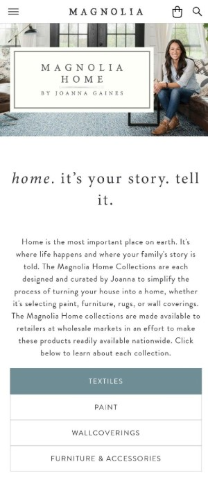
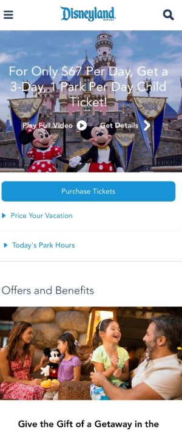
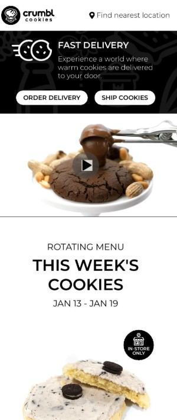

White Space & Clean Design
Magnolia Home
magnoliahome.com

The Magnolia Home page is a great example of utilizing white space to achieve a very clean design.
The main image is simple with Joanna Gaines as the focus. The title/logo are placed neatly in the center
box with a good amount of space to the border.
The proximity of the Headers, Paragraph, and Navigation with a center alignment add to the clean appeal
of the overall design.
Visual Hierarchy
Disneyland
disneyland.com

This home page for Disneyland makes it very clear that one of the most important things is to purchase
tickets.
They utilized the rules of visual hierachy to convey to the user what is most imprortant to them.
In this case it's the image, the tickets button, logo, and subsiquent navigation links. There is more
useful information as you continue
to scroll down in the mobile view, but they did a great job making the most important things stand out
by an obvious visual order.
Contrast
Crumbl Cookies
crumblcookies.com

The Crumbl Cookies home page has many uses of effective contrast. It makes their page visually
appealing and easy to read.
The simple black and white colors of the font and navigation buttons aid to readability and user
experience.
They also used good font contrast by varying the weight of the typeface and choosing to put certain things in
all caps.
Lastly, all of their product images contrast very well with the clean white bakground. Giving the
visitor a clear
understanding of what they have to offer, and showing it as a focal point.